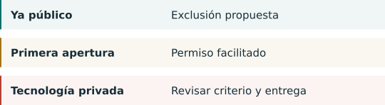

04. El futuro de los modelos abiertos¶
Descargar no significa poder reproducir todo¶

Pesos descargables, licencia abierta y documentación suficiente del entrenamiento son propiedades distintas. La definición de Open Source Initiative exige libertades de uso, estudio, modificación y distribución, junto con información de datos, código y parámetros. No es el criterio jurídico chino. OSI
El repositorio R1 de DeepSeek declara licencia MIT para código y pesos y aclara el origen de variantes destiladas. Qwen3 documenta modelos descargables y licencia Apache 2.0. Son ejemplos concretos ya publicados, no garantías sobre todos los modelos de esas empresas ni sus versiones futuras. R1 QWEN
La nota 1 excluye tecnología ya pública; la nota 2 facilita nuevas exportaciones abiertas de tecnología restringida. Publicar un artículo no publica necesariamente pesos privados ni código de entrenamiento. Los archivos concretos, las descargas sujetas a condiciones y las mejoras privadas posteriores requieren atención. El anuncio no resuelve todos esos casos. CN-A1 CNQA
Cuatro posibilidades, sin probabilidades inventadas¶
Continuidad de las publicaciones. Las facilidades explícitas apoyan la posibilidad de que las empresas mantengan modelos abiertos. Nuevas limitaciones o retrasos documentados debilitarían esa lectura. CN-A1
Más preparación. Podrían documentarse mejor los datos, umbrales y archivos antes de publicar. Es nuestra inferencia, no prueba de que las publicaciones se retrasarán. CN-A1
Versiones diferenciadas. Una empresa podría publicar una versión y reservar otra más potente o datos especiales. Es una posibilidad empresarial, no una obligación. CN-A1
Más servicios alojados. La distinción oficial de servicios hace plausible esta vía, pero no garantiza precio, privacidad, continuidad ni ausencia de otras prohibiciones. CNQA
Vigilaríamos el catálogo definitivo, el significado de publicación, los permisos automáticos, los nuevos puntos de control y las reglas de chips de Estados Unidos. Ninguna fuente permite fijar una fecha para el fin de los modelos abiertos chinos. Sugerimos conservar versión, licencia, fecha de descarga y cambios posteriores; es una recomendación documental, no una nueva obligación. CN-A1 EAR742 EAR744